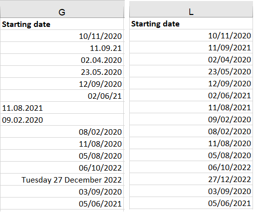
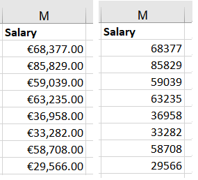
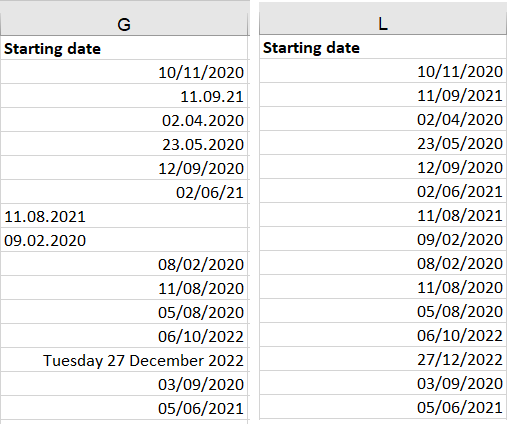
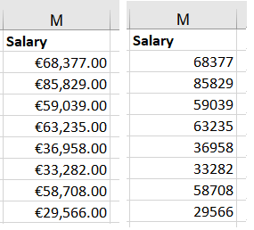

Data Cleaning & Preparation - Excel
INTRODUCTION.
Excel file used in this project contains information about online store employees.
It contains First and Last name, department, email, home address, starting date and salary.
The task is to clear data set to be more useful and standardized. We do not need to remove any irrelevant columns and can proceed with next step, removing duplicate data.
Deduplication
Duplicated data usually was created by error and in most cases should not be there. They are unnecessary waste of space and time, moreover they are increasing chances for potential problems and costly mistakes.
 I am going to analyse and remove rows which contains exact copy of employees information.
I am going to analyse and remove rows which contains exact copy of employees information.

Fixing structural errors
FORMATTING AND STANDARDIZATION – all cells within column will be displayed the same way.
Depending on requested format, words can be formatted to upper or lower cases. Otherwise standard format will be applied using formula PROPER()
I am formatting 'First' and 'Last Name' columns to standardize appearance of data. Each cell in both columns will start from capitol letter.

REMOVING SPACING - removing unnecessary spaces, before and/or after the word.
While spacing before word its clearly visible, spotting spacing at the end of the word is not that simple. It may appear that as long as data looks ‘right’, additional spaces after the word should not matter.
In general that may be okay if you are going to use, and keep data in excel. But if you want to use data in SQL or Python (especially numeric), additional spaces may cause issues.
Therefore TRIMING is necessary.
 DATE FORMATING
Firstly I have changed date format to ‘Short date’. This removed name of the day and month and turn it into numbers, moreover have changed year into 4 digits instead of 2.
Some date was written with ‘/ ’ as separator, others with ‘.’ I replaced all dot-separators with slash.

CURRENCY - Adjusting currency in salary table.
If data will be used in any programming language it is advisory to remove currency sign as program may read cells as a strings not integers/ floats. This will require later on further conversion if we would like to perform any calculations using those fields.
For easier usage in programs I removed .00 at the end of the salary.

DATE FORMATING
Firstly I have changed date format to ‘Short date’. This removed name of the day and month and turn it into numbers, moreover have changed year into 4 digits instead of 2.
Some date was written with ‘/ ’ as separator, others with ‘.’ I replaced all dot-separators with slash.

CURRENCY - Adjusting currency in salary table.
If data will be used in any programming language it is advisory to remove currency sign as program may read cells as a strings not integers/ floats. This will require later on further conversion if we would like to perform any calculations using those fields.
For easier usage in programs I removed .00 at the end of the salary.

Filtering data out
Using FILTER option to check values entered into column.
I am looking for any unusual 'values' in each column. It may be misspelled word, very high or very low numeric value or starting date placed in the future.
 Founded misspelled ‘Marketing’ and corrected it. This correction is needed in case we would like to present specific calculations based on department divisions.
If I would not correct it, program would understood it as another department.
Similar to the 'Whig' department which was duplicated with additional/unwanted characters after
Filtering them and removing words and signs after department’s name allowing to bring two fields together as its originally meant to be.
Founded misspelled ‘Marketing’ and corrected it. This correction is needed in case we would like to present specific calculations based on department divisions.
If I would not correct it, program would understood it as another department.
Similar to the 'Whig' department which was duplicated with additional/unwanted characters after
Filtering them and removing words and signs after department’s name allowing to bring two fields together as its originally meant to be.
Dealing with missing data
After scanning data I did not find any missing data which were very important and urgently needed.